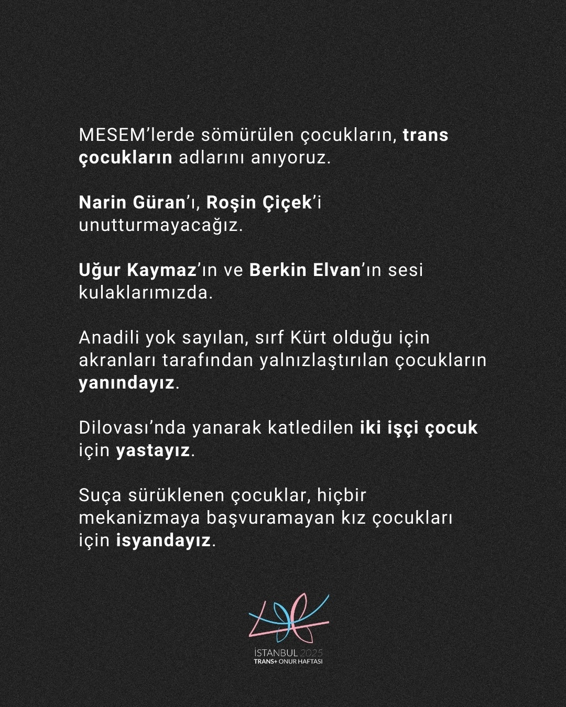
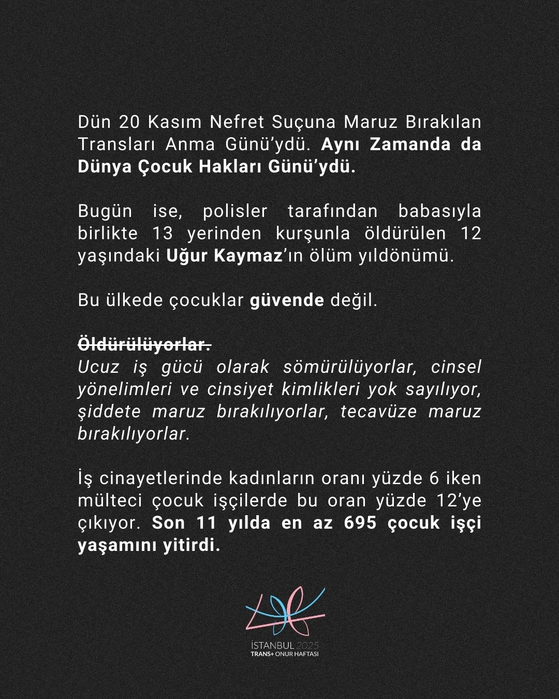

2025-11-21 12:14:00
Dün 20 Kasım Nefret Suçuna Maruz Bırakılan Transları Anma Günü’ydü. Aynı Zamanda da Dünya Çocuk Hakları Günü’ydü.
Bugün ise, polisler tarafından babasıyla birlikte 13 yerinden kurşunla öldürülen 12 yaşındaki Uğur Kaymaz’ın ölüm yıldönümü. Bu ülkede çocuklar güvende değil. Öldürülüyor, ucuz iş gücü olarak sömürülüyorlar, cinsel yönelimleri ve cinsiyet kimlikleri yok sayılıyor, şiddete maruz bırakılıyorlar, tecavüze maruz bırakılıyorlar. İş cinayetlerinde kadınların oranı yüzde 6 iken mülteci çocuk işçilerde bu oran yüzde 12’ye çıkıyor. Son 11 yılda en az 695 çocuk işçi yaşamını yitirdi.
MESEM’lerde sömürülen çocukların, trans çocukların adlarını anıyoruz.
Narin Güran’ı, Roşin Çiçek’i unutturmayacağız.
Uğur Kaymaz’ın ve Berkin Elvan’ın sesi kulaklarımızda.
Anadili yok sayılan, sırf Kürt olduğu için akranları tarafından yalnızlaştırılan çocukların yanındayız.
Dilovası’nda yanarak katledilen iki işçi çocuk için yastayız.
Suça sürüklenen çocuklar, hiçbir mekanizmaya başvuramayan kız çocukları için isyandayız.
Kurduğunuz cisheteroseksüel erkek sistem çocukları, transları, kadınları, mültecileri, hayvanları katlediyor. Patriyarkanın ayakta kalmak için düşman kıldığı, katlettiği bizler ise yaşam haklarımız için direniyoruz.
Bizler, kesişimsel mücadelemizden vazgeçmiyoruz.



